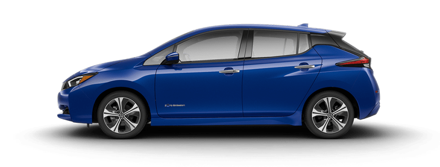

Leaf
Remote
Vérification…

Portes
Verrouiller
Déverrouiller
Climatisation
22
°C
Démarrer
Arrêter
État de la voiture
Batterie
—
Santé (SOH)
—
Climatisation
—
Véhicule
—
Odomètre
—
Mettre à jour les informations
Lire l'odomètre (peut échouer, véhicule doit être éveillé)
WiFi ESP32 (pour mise à jour OTA)
Wifi
Leafcan
OFF
Maintenance
Redémarrer l'ESP32
Redémarrer le Boron
Configuration (device ID / token)
Device ID Particle
Access Token Particle
Sauvegarder
Build v7